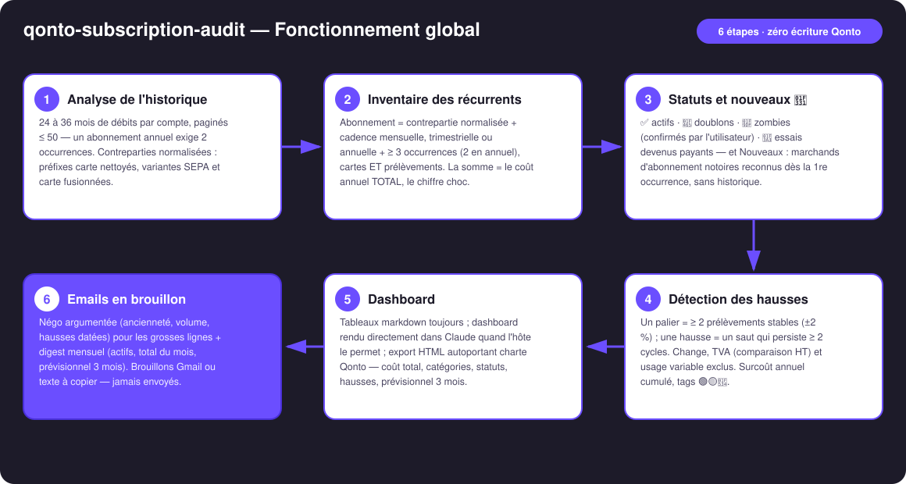
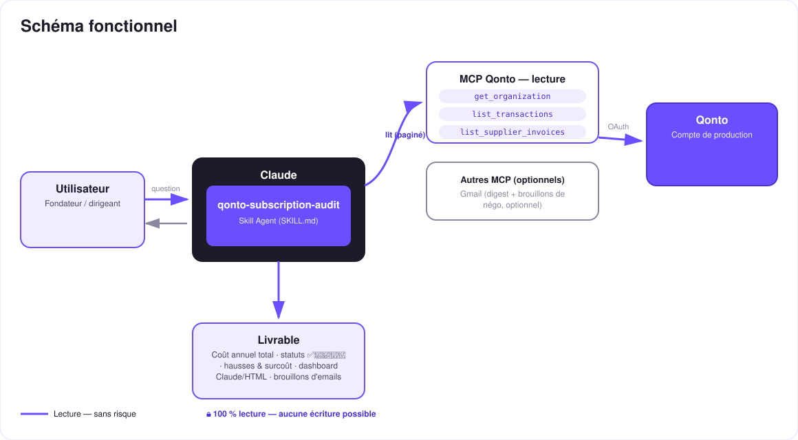

L'audit complet des dépenses récurrentes — ce que tu paies, ce que tu as oublié, ce qui a augmenté en douce, et ce qui vient de commencer.
Les abonnements s'empilent, les prix montent en douce, les essais deviennent payants, personne ne résilie. Le skill fait l'audit COMPLET des dépenses récurrentes sur 24-36 mois :
Tous les prélèvements récurrents (cartes ET SEPA), cadences mensuelle/trimestrielle/annuelle, coût annuel TOTAL — le chiffre choc — et un statut par ligne : ✅ actif · 👥 doublon · 🧟 zombie (confirmé par toi) · 🎣 essai devenu payant.
Marchands d'abonnement notoires — SaaS, IA, plateformes de formation (Systeme.io, Skool…), hébergeurs & noms de domaine (OVH, Gandi…) — reconnus dès la 1re occurrence, sans historique ; puis montant rond, libellé, 2e occurrence ~30 j → « abonnement probable, à confirmer ». Attraper l'essai avant qu'il devienne une rente.
Paliers de prix (±2 %, saut persistant ≥ 2 cycles), change et TVA exclus, tags 🟢🟡🔴 vs inflation, ⚪ usage variable à part — et le surcoût annuel cumulé de toutes les hausses.
Dashboard construit directement dans Claude, exportable en HTML autoportant charte Qonto ; email de négo argumenté et digest mensuel — brouillons Gmail, jamais envoyés sans toi.
| Prérequis | Détail | Obligatoire |
|---|---|---|
| Compte Qonto production | Le skill s'adapte à toute organisation — get_organization d'abord, zéro donnée en dur | ✅ |
| Pays | Cœur agnostique : inventaire, statuts et détection des hausses valables dans tous les pays Qonto (FR, DE, ES, IT…). Seul le référentiel d'inflation est localisé, référence annoncée | ℹ️ détecté |
| MCP Qonto connecté | Connecteur officiel (claude.ai / Claude Desktop), login OAuth | ✅ |
| Historique ≥ 24 mois | Un abonnement ANNUEL ne se repère qu'avec 2 occurrences : sur 12 mois, les annuels passent sous le radar. En dessous : audit du visible + annonce honnête de ce qui peut manquer | ⭕ recommandé |
| MCP Gmail | Détecté dynamiquement : présent → digest mensuel + brouillons de négo ; absent → texte à copier. Le cœur n'a besoin que de Qonto | ⭕ optionnel |

PAYPAL *, SUMUP *…) nettoyés ; variantes SEPA et carte d'un même fournisseur fusionnées en une seule lignelist_supplier_invoices a la facture — un changement de taux n'est pas imputé au fournisseuremitted_at · pagination ≤ 50 partout
Zéro écriture Qonto : ce skill ne fait que lire — sans risque par construction. Les seuls artefacts sortants sont des brouillons d'email (négo, digest), que tu relis, modifies et envoies (ou pas) toi-même. Pour protéger un abonnement par carte plafonnée, c'est le skill qonto-subscription-guardian.
| Statut | Critère | Lecture | Action proposée |
|---|---|---|---|
| ✅ Actif utile | Cadence régulière, usage confirmé par toi | Le socle du budget | Suivi, alerte à la prochaine hausse |
| 👥 Doublon | Deux fournisseurs de la même catégorie (2 visios, 2 hébergeurs…) | Un des deux est de trop | En garder un, chiffrer l'économie |
| 🧟 Zombie | Prélevé ≥ 6 mois, zéro variation, catégorie dormante — hypothèse | Probablement plus utilisé | Résiliation après ta confirmation |
| 🎣 Essai devenu payant | Première charge plein tarif récente, précédée de rien ou d'un montant symbolique | Conversion silencieuse | Décision immédiate : garder ou couper |
| 🌱 Nouveau (probable) | Marchand notoire reconnu dès la 1re occurrence (sans historique) · montant rond · libellé abonnement · 2e occurrence ~30 j | Abonnement naissant, à confirmer | Section « Nouveaux » — l'attraper tôt |
| ⚪ Usage variable | Variabilité forte (API, cloud, pub) | Facture qui monte ≠ prix qui monte | Prix implicite si isolable, sinon dit tel quel |
| Tag | Critère | Action proposée |
|---|---|---|
| 🟢 Indexation normale | Hausse annualisée ≤ inflation générale | Aucune — mentionné pour info |
| 🟡 Au-dessus de l'inflation | Hausse annualisée > inflation | Listé dans le rapport, email sur demande |
| 🔴 Hausse agressive | ≥ 3× l'inflation ou ≥ 10 % d'un coup | Email de négo proposé d'office |
Alertes transverses : 💥 double prélèvement (< 72 h) · 🔁 changement de cadence (souvent un repricing déguisé).
| Sortie | Format | Quand |
|---|---|---|
| Réponse dans la conversation | Tableaux markdown : chiffre choc, portefeuille par statut, section Nouveaux 🌱, hausses, usage variable à part | Toujours — c'est la base |
| Dashboard dans Claude | Rendu directement dans la conversation (artifact) : compteur de coût annuel, répartition par catégorie, statuts ✅👥🧟🎣🌱, hausses avec deltas, prévisionnel 3 mois | Quand l'hôte le permet (claude.ai, Claude Desktop, Claude Code) |
| Export HTML | Le même dashboard en fichier autoportant, charte Qonto (violet #6B4EFF / noir #1D1B29 / blanc, clair/sombre) | Sur demande — à garder ou partager |
| Emails | Brouillon Gmail (MCP présent + accord explicite) ou texte à copier : négo + digest mensuel | Jamais envoyés sans toi |
La démo ≤ 3 min jointe à la PR suit le storyboard : problème → inventaire live et statuts → hausses + surcoût → le dashboard qui se construit dans Claude avec le chiffre choc, et la section Nouveaux 🌱 qui attrape un essai récent → wrap-up. Tournée en live sur un compte de production réel.
| Idée | Effort | Note |
|---|---|---|
| Veille continue : alerte au premier prélèvement d'un 🌱 confirmé ou d'un nouveau palier | Faible | Le rituel mensuel devient automatique |
| Benchmark prix public : comparer au tarif affiché du fournisseur | Moyen | Détecte aussi les clients « grandfathered » qui paient trop |
| Catégorisation Qonto des abonnements détectés (labels) | Faible | Le portefeuille devient lisible dans l'app aussi |
| Suivi post-négo : vérifier que le prix a vraiment baissé | Faible | Boucle fermée — la série de prix existe déjà |
Passerelle carte plafonnée : enchaîner sur qonto-subscription-guardian | Faible | L'audit trouve, le guardian protège |
qonto-subscription-guardian